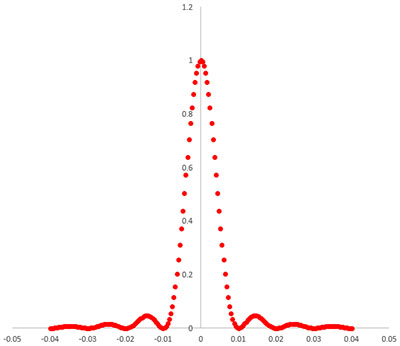
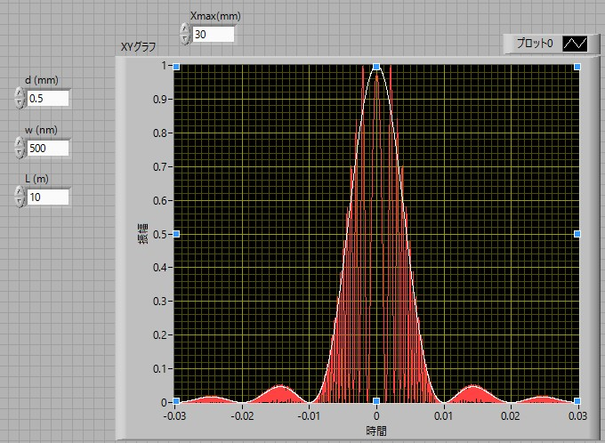

回折-12
一個のスリットの回折-12
光の振動数を，ω，とすれば，その波形は，
\(\Large \sin ( \omega t - phase ) \)
となります．
位相 ＝ 光路÷波長×2π
となるので，
\(\Large phase = \frac{r}{\lambda} \times 2 \pi = k r \)
となります．ここで，ｋ，は波数です．従って，
\(\Large \begin{eqnarray} \sin ( \omega t - phase ) &=& \sin \left[ \omega t - k \left( r_0 - \frac{xx_0}{r_0} \right) \right] \\
&=& Im \left[ exp \left\{ i \omega t - ik \left( r_0 - \frac{xx_0}{r_0} \right) \right\} \right] \\
&=& Im \left[ exp \left\{ i (\omega t - kr_0) \right\} \cdot exp \left( ik \frac{xx_0}{r_0} \right) \right] \\ \end{eqnarray} \)
となります．これを，-d/2～d/2まで積分すればよいので，
\(\Large \begin{eqnarray} u
&=& Im \left\{ e^{ i (\omega t - kr_0)} \cdot \displaystyle \int_{ -\frac{d}{2} }^{ \frac{d}{2} } exp \left[ ik \frac{xx_0}{r_0} \right] dx_0 \right \} \\
&=& Im \left\{ e^{ i (\omega t - kr_0)} \cdot \frac{r_0}{ikx} \left[ exp \left( ik \frac{xx_0}{r_0} \right) \right]_{- \frac{d}{2} }^{ \frac{d}{2}} \right \} \\
&=& Im \left\{ e^{ i (\omega t - kr_0)} \cdot \frac{r_0}{ikx} \left[ exp \left( ik \frac{xd}{2r_0} \right) - exp \left( - ik \frac{xd}{2r_0} \right) \right] \right \} \\ \end{eqnarray} \)
となります．ここで，
\(\Large e^{i \theta} - e^{-i \theta} = 2i \sin \theta \)
なので，
\(\Large \begin{eqnarray} u
&=& Im \left\{ e^{ i (\omega t - kr_0)} \cdot \frac{r_0}{ikx} 2i \sin \left( \frac{kdx}{2r_0} \right) \right\} \\
&=& \sin (\omega t - kr_0) \cdot \frac{2r_0}{kx} \sin \left( \frac{kdx}{2r_0} \right) \\ \end{eqnarray} \)
となります．最初のsinは振動項となるので，強度はそれ以降となり，
\(\Large \begin{eqnarray} I
& \propto & \left[ \frac{2r_0}{kx} \sin \left( \frac{kdx}{2r_0} \right) \right]^2 \\
&\propto & \frac{ \sin^2 \left( \frac{kdx}{2r_0} \right)}{\left( \frac{kdx}{2r_0} \right)^2} \\ \end{eqnarray} \)
となります． では実際にどのような波形になるかを試してみましょう．

このように，多重スリットの場合と同様の形状となります．(d=0.5 mm, λ=500 nm, L=10 m)
今回はフラウンフォーファ近似，というかなり大胆な近似を行いましたが，もう少し厳密に計算するとどうなるのでしょう？
きちんとした式を立てるのが非常に困難なので，Labviewにて数値計算を行ってみました．その結果が下の図です．

このように，細かい強度の変化は近似でつぶれてしまいますが，外観は近似でも適切であることがわかります．